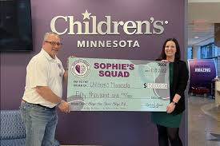

Learn about Sophie's Squad's mission, locations, and how to get involved!
Sophie's Squad is a nonprofit organization dedicated to improving the mental health of athletes by raising awareness and providing support for mental well-being.
Mission: Founded in 2021 with the mission to improve the mental health of athletes from youth to college levels by raising awareness of mental health issues and removing the stigma associated with seeking help.
Get involved by donating, volunteering at events near you, and talking about mental health in order to further destigmatize it for female athletes!

Click the button below to volunteer for this charity
By clicking the button above, you will be prompted to enter your contact information, and the charity will reach out to you.